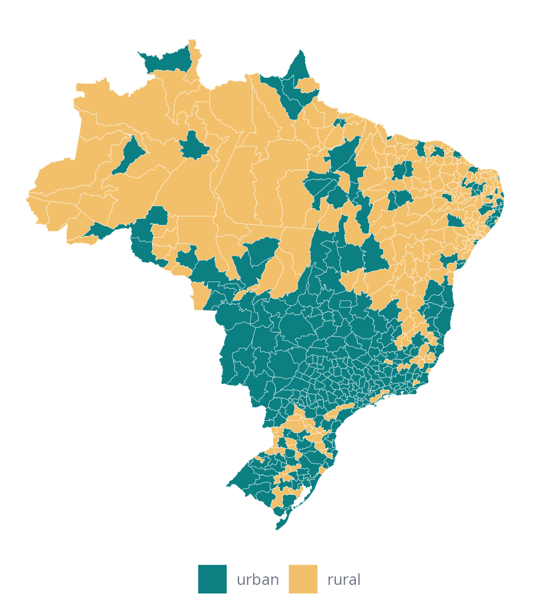
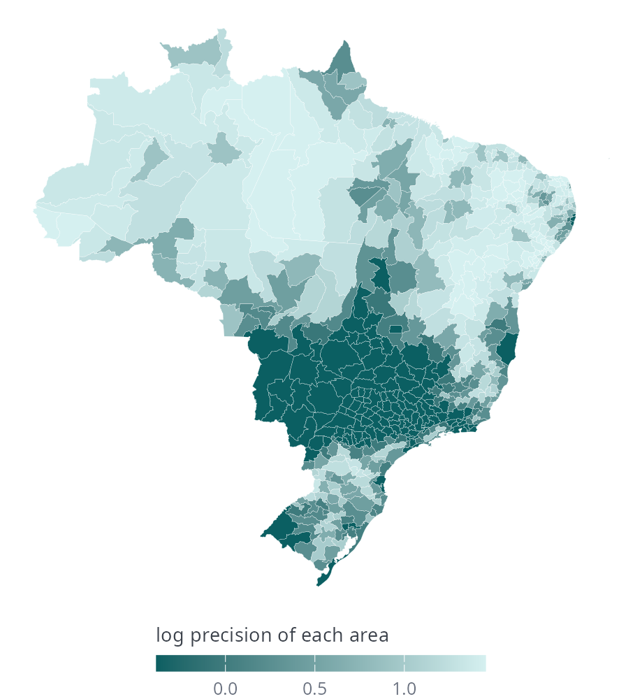

gmrfs · fbesag
Sub-regions that are not neighbours
The sub-regions can be any grouping of the areas.
Urban and rural
The 558 microregions of Brazil: 309 more than 70% urban, 249 not.


Example
Simulated: urban rough ($\theta = -0.5$), rural smooth ($\theta = 1.5$).
library(INLA)
library(gmrfs)
load("brazil_558_microregions.RData") # data, graph, map_df
group <- ifelse(map_df$urban > 70, 1, 2) # 1: more than 70% urban, 2: the rest
m <- fbesag(graph, id = group, sd_gamma = 1)
## data simulated from fbesag: urban microregions rough, rural ones smooth
april <- subset(data, T1 == 4)
E <- april$E * sum(april$Y) / sum(april$E)
set.seed(1)
x <- as.numeric(gmrf_sample(m, theta = c(-0.5, 1.5)))
d <- list(y = rpois(558, E * exp(x)), E = E, idx = 1:558)
fit_besag <- inla(y ~ 1 + f(idx, model = fbesag(graph, id = rep(1, 558))),
family = "poisson", E = E, data = d)
fit_groups <- inla(y ~ 1 + f(idx, model = m), family = "poisson", E = E, data = d)
round(fit_groups$summary.hyperpar[, c("mean", "0.025quant", "0.975quant")], 2)
fit_groups$mlik[2] - fit_besag$mlik[2] # log Bayes factor for the groups mean 0.025quant 0.975quant
Theta1 for idx -0.39 -0.60 -0.17
Theta2 for idx 1.45 1.27 1.63
[1] 63.92342Both intervals cover the truth. With the default $\sigma_\gamma = 0.2$ the estimates are pulled together ($-0.17$, $1.26$) and miss it.